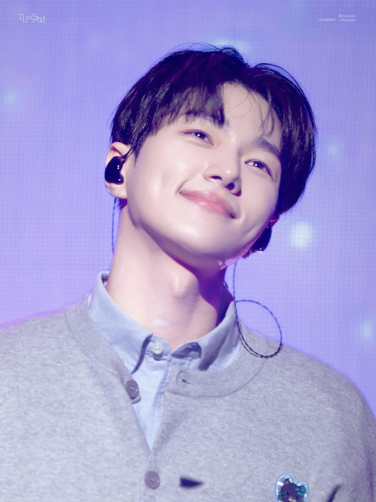

A FOREVER FAVORITE
INFINITE
For the songs I can return to again and again. INFINITE has a special place in this little music diary, and their music is part of the soundtrack of my everyday life.
Always on my playlist ♡A LITTLE CORNER OF MY WORLD
A collection of songs, artists, and little moments that make ordinary days feel a bit more special.
CURRENTLY ON REPEAT
The songs I keep coming back to, day after day.
A LITTLE BIT OF EVERYTHING I LOVE
My everyday YouTube playlist
Press play, take a little break, and enjoy the music.
Open playlist on YouTubeARTISTS THAT HAVE A SPECIAL PLACE
Some artists become part of the little soundtrack of our lives.
A FOREVER FAVORITE
For the songs I can return to again and again. INFINITE has a special place in this little music diary, and their music is part of the soundtrack of my everyday life.
Always on my playlist ♡
A SPECIAL LITTLE CORNER
A little appreciation corner for L — one of my favorite artists. This space is a personal reminder of the music, moments, and joy that fandom can bring.
My special favorite ♡ALSO ON REPEAT
Another familiar name in my daily playlist. Their songs bring a different energy and make this playlist feel like my own little world.
Play it one more time ♡THANK YOU FOR STOPPING BY
This is my little corner for the music I love. I hope you find a song that makes your day feel a little lighter, too.
Back to Good Pastel